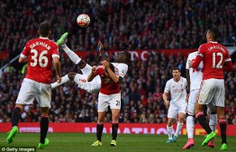

Складно підводити підсумки сезону, поки той не закінчиться. Особливо, якщо мова йде про враження, якими я буду ділитись нижче. Благо 9 місяців пройшли не менш весело, ніж проходить вагітність:)
Нефутбольне літо 2015 року проходило так само цікаво, як і власне матчі. Керівництво прозоро натякнуло Роджерсу, що три роки пройшло, а обіцяного так і не дочекались (мова про Чемпіонство). Брендан не знітився, звалив частину вини на помічників, другу частину на неслухняний комітет і сяк-так протримався у сідлі. Керівництво дало черговий шанс філософу (не Ван Гаалом єдиним жила АПЛ) і, як на мене, зробило усе від себе можливе.
Поки трибуни забували про шорти Коліна Паско, яким він завжди радував блукачий погляд вболівальника, північноірландець обзавівся цікавими помічниками. Шон О'Дрісколл був доволі відомим, хоча і в більш вузьких колах. Його підхід до тренувань був не тривіальним, цікавою і водночас головною стратегією роботи з гравцями була наступна: "я хочу щоб гравці не просто виконували якусь дію на полі, а щоб вони розуміли, навіщо і коли її робити". Такий підхід мав в унісон звучати з філософією Брендана, тому поява такої фігури в тренерському штабі розглядалась на рівні із перебуванням у свій час на аналогічній посаді Стіва Кларка.
Хоча для когось куди більш знаковим було повернення Гаррі Маккалістера. Свого часу харизматичний боєць на полі, нині ж мав додати психологічної впевненості гравцям або, як мінімум, стати "буфером" між ними та фанатами, які ще пам'ятали його не рядові заслуги. Пепейн Ліндерс, ще один новий помічник, мав відповідати за підготовку молоді
Поряд із підсиленням тренерського штабу кипіли і кадрові пристрасті. Клуб, а впершу чергу Брендан, таки вирішили попрощатись із горе-нападниками Боріні та Балотеллі та зкінчити казку Рікі Ламберта. Такі рішення напрошувались весь минулий сезон, що з появою Інгза, Орігі (а згодом і Бентеке) все розставили по своїх місцях. Мілнер, креатура особисто північноірландця в центр поля, був підписаний впевнено і мав стати своєрідною заміною Джеррарда, тільки більш якісною і трохи молодшою. Здивував підхід Ейра до трансферної політики - підписання Крістіана, Фірміно, Клайна відбувалось в лічені дні, що дуже вже розходиться із сагами Коноплянки, Мхітаряна і т.д.
Маса розмов точилась навколо фігури Бентеке: чи підійде він іншій ігровій філософії? яка нині буде схема у Роджерса? чи виправдає він 32,5 млн фунтів? Однозначних відповідей у мене немає й понині. Натаніель приходив на місце Джонсона, який уже порядком піднабрид своїм зневажливим відношенням до прямих обов'язків, при цьому ще й мало радував підтримкою в атаці. Фірміно ж мав стати універсальним бойовим солдатом групи атаки, а його дует із Коутіньйо одним із найочікуваніших.
Такий підхід до справи зі сторони Брендана мені імпонував - він рішуче позбувся непотрібних гравців, чітко роздав задачі ТК і отримав потрібних людей максимально рано. Не менше порадувала гра від оборони в перших матчах: за мінімальної кількості гольових моментів один влучний удар міг принести 3 залікових пункти.
Але останнє було фальшом. Скоріше обтяжливий початок сезону (який почався раніше, ніж зазвичай, у звя'зку із майбутнім Євро) дався взнаки на підготовці усіх команд. Уже в третьому турі мала бути бойова нічия 2-2 чи 3-3, далі Вест Хем та МЮ показали, чому критикують захист.
Що цікаво, але навіть виграні матчі (Сток і Борнмут) більше породжували негативу до тренера. Уже тоді Роджерса піддали шаленому тиску і будь-яка поразка зривала б лавину критики на менеджера. Не знаю як було насправді у команді, але уже у вересні здавалось, що і команда зливає наставника. Невнятні матчі, підсилені невнятними результатами (нічиї з Норвічем, Евертоном, Бордо, Сьоном), які насправді мали бути скоріше виграшними, остаточно роздушили Брендана морально. Він втратив віру у свою ж філософію і почав піддаватись панічним рішенням. Не заклавши фундамент оновленої команди, почав гратись зі схемами (повертався навіть до 3-4-3) і лише дезорієнтував гравців. Його інтерв'ю як під копірку, що "ми станемо сильніші, ми зробимо правильні висновки" можна було просто не читати, бо в англійській мові важливо дотримуватись структури речень, тому нарватись навіть на інші формулювання було вкрай важко.
Існує цілком ймовірна версія, що наставнику дали попрацювати допоки не відпочине Клопп. Як тільки з ним була досягнута попередня домовленість, Роджерсу навіть не вказали на двері, а просто зателефонували і сказали збирати речі. Саме такий вчинок керівнцтва наштовхує на думку, що все було відомо мало не з літа і його звільнення було питанням часу. Питанням, як довго Юрген зможе прожити без тренувань і гарячих вболівальників.
По правді кажучи, я підтримував Роджерса до останнього. Із усіма його злетами і падіннями. Ну він же явно не безталанний тренер. Нехай навіть сезон 13/14 багато хто вважає заслугою Суареса, але він непогано працював із матеріалом, що був у нього (а матеріал був явно не з найкращих). Не соромився працювати із молоддю, вдало застосовував цікаві схеми (3-4-3 була откровенням майже пів сезону), а під дулом зброї взагалі видавав дивовижні відрізки.
Із його мінусів очевидним є невміння працювати на трансферному ринку. Спочатку Алленів та Борінь списували на відсутність амбіцій та не достатню міцність стержня, який розходився із амбіціями клубу. Не вистачало йому і кам'яної стійкості, яка була особливо вразлива до громадської думки. Де тільки не грав Джеррард, аби скаузери могли максимально споглядати на аксакала.
А він просто мав набити свою кількість шишок, поставити мінімально необхідну кількість експериментів. Його філософія враховувала максимальну кількість інтересів: гравців, керівництва, горе-комітету, вболівальників. Цю філософію він підтримував до останнього і за це ж поплатився. Не можна бути хорошим для всіх. Шкода, що цей непідйомний камінь він так і намагався нести до кінця.